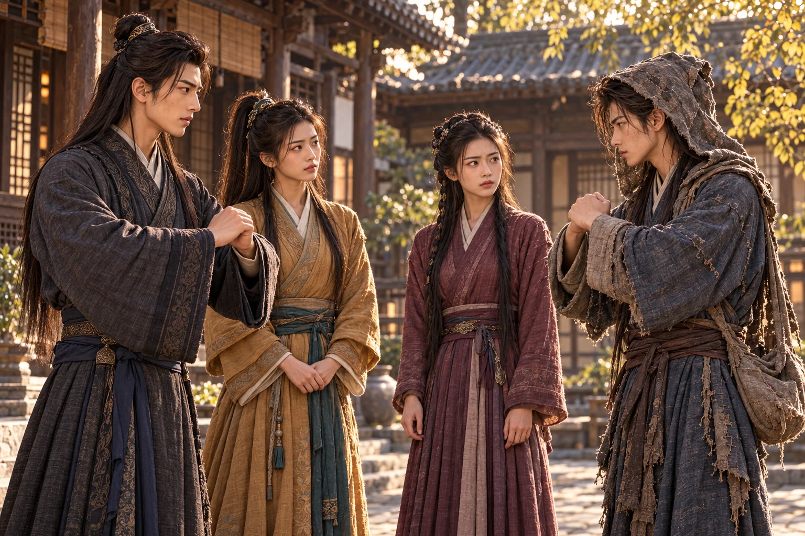
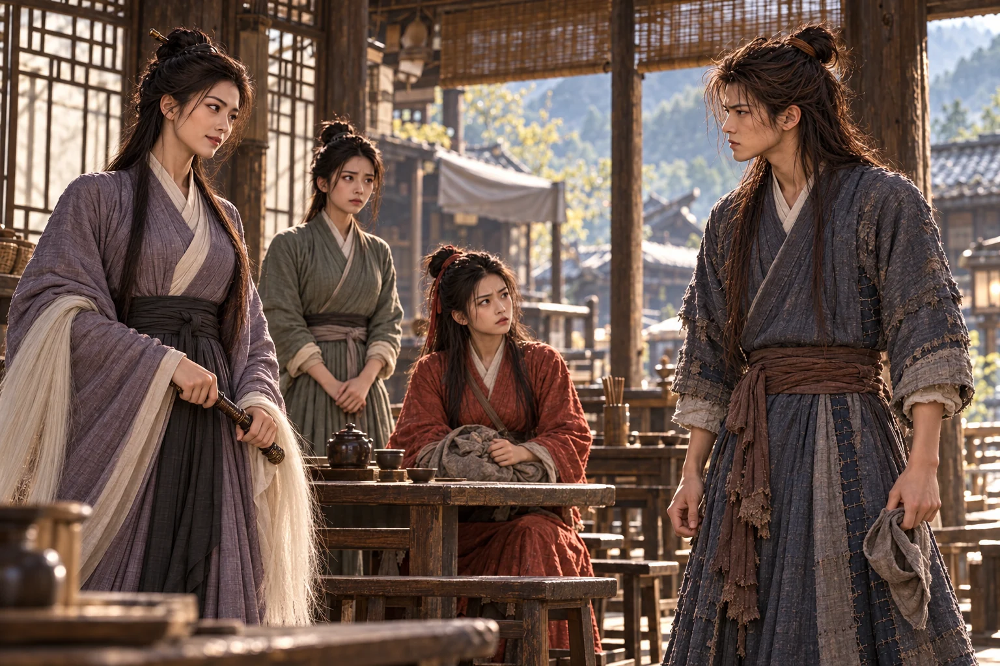

mengenali langkah pincang itu sebelum mengenali wajahnya.
Gadis berbaju merah kesemek sedang bertengkar dengan seorang pemilik warung. Ia menolak disebut pencuri hanya karena meminta air sebelum mengeluarkan uang. Tangan kirinya memeluk buntalan; kaki yang dahulu terluka masih diletakkannya menyamping.
. Empat tahun lalu Dani melihatnya dibawa , dengan tangan terulur kepada orang-orang yang tidak sanggup menolongnya.
“Kalau hendak menonton, carilah pertunjukan lain,” kata Wushuang ketika melihatnya. “Di sini tidak ada yang patut ditertawakan.”
“Aku justru hendak bertanya jalan, Nona. Pernahkah engkau melihat perempuan berbaju putih, membawa pedang, dan berjalan seorang diri?” tanya Dani.
“Aku tidak mengikuti setiap perempuan yang melintas.” Pandangan Wushuang turun ke jubah biru Dani. “Mengapa wajahmu sekotor itu?”
Dani merapatkan tudung. Debu dan arang menyamarkan alis serta pipinya; ia belum ingin dikenali pendeta selama mencari . “Barangkali karena jalan ini tidak menyediakan air bagi orang yang belum membayar.”
Ia meletakkan uang di meja. Wushuang mengambil cangkir, tetapi menatapnya dengan curiga. “Jangan mengira secangkir air memberimu hak mengikutiku.”
“Kalau jalan kita searah, izinkan aku berjalan di depan. Nona boleh mengatakan akulah yang diikuti,” jawab Dani.
“Dasar orang bodoh. Mulutmu lebih sibuk daripada kakimu,” dengus Wushuang.
Dani membiarkan panggilan itu tinggal. Ia belum menyebut namanya. Wushuang terus menoleh ke belakang, dan ia perlu tahu apakah gadis itu masih mengabdi kepada Li Mochou atau sedang melarikan diri darinya.
Jawabannya datang sebelum malam. Di penginapan tempat mereka mencari kamar, Wushuang mendadak menariknya menjauhi jendela. Dari halaman terdengar suara lembut yang pernah menyertai kehancuran keluarga Lu.
“Anak manis, keluarlah. Jangan membuat gurumu menunggu sampai pemilik rumah ikut mendapat kesulitan.”
Li Mochou berada di depan pintu bersama . Dani mencari jalan belakang, tetapi putih telah menyapu kisi jendela. Wushuang mundur sambil menghunus pedang; ujung bilahnya bergetar meskipun mulutnya masih berani membalas.
“Guru mengajar murid berjalan sendiri. Mengapa sekarang perjalanan murid dianggap kesalahan?” tuntut Wushuang.
“Berjalanlah sejauh yang kausuka. Kembalikan dahulu barang yang bukan milikmu,” jawab Li Mochou.
Seekor keledai tiba-tiba meringkik di halaman. Seorang menarik kekangnya menjauhi pintu, lalu melontarkan sesuatu ke arah Hong Lingbo. Murid menghindar. Saat perhatian mereka pecah, gadis itu menunjuk lorong samping kepada .
Wajah penolong tersebut tampak kaku, hampir tanpa perubahan ketika ia bergerak. Dani tidak sempat mengamatinya. Ia membawa melewati dapur, memanjat tembok rendah, dan baru berhenti setelah suara kejaran tertinggal.
“Siapa perempuan tadi?” tanyanya.
“Kalau tahu, aku sudah memanggilnya,” balas Wushuang. Napasnya terputus-putus. “Si Bodoh, jangan berhenti di tempat yang mudah dilihat!”
Mereka membutuhkan perlindungan untuk melewati jalan besar. Dani menemukannya dalam rombongan pejabat Mongol yang bermalam di sebuah perkampungan. Ia menyelinap ke kamar pemimpinnya, menundukkan serangan cakar lelaki itu, lalu menggertaknya dengan luka kecil pada bahu yang dikatakan terkena racun. Ketakutan membuka jalan yang tidak akan diberikan permohonan baik-baik.
Pejabat itu bernama , putra . Dani belum pernah mendengar namanya. Sesudah memperoleh tumpangan bagi dirinya dan Wushuang, ia mengakui bahwa ancaman racun tadi hanyalah tipu daya. Zhu marah, tetapi lega; lebih mudah memperlakukan pemuda berbahaya itu sebagai tamu daripada mengakui dirinya telah dipermainkan.
Di Longju, rombongan berhenti untuk beristirahat. Seorang lelaki berjanggut panjang datang bersama putra dan putrinya. Dani melihat Zhu membungkuk kepada ayahnya, kemudian menyambut kedua adiknya.
“, Yan, mengapa kalian ikut? Bukankah Ayah masih bertugas di ibu kota?” tanya Zhu.
Yelü Chucai meminta pengiring keluar. Dani dan Wushuang kembali ke kamar mereka tanpa diperkenalkan kepada kedua pendatang muda itu.
Keluarga tersebut sedang menjauh dari perselisihan istana. Chucai, pejabat Khitan yang mengabdi kepada Mongol, memakai penugasan ke selatan untuk menyelamatkan keluarganya dari kemurkaan penguasa. Dani belum mengetahui urusan itu; baginya mereka baru sebuah keluarga yang bepergian dengan pengawalan terlalu ketat.
Malamnya, bunyi kayu pecah membuat Dani membuka jendela. Seorang perempuan menyusup ke ruangan Chucai dengan golok terangkat.
“Yelü Chucai! Hutang darah ayah dan ibuku harus kaubayar malam ini!”
Zhu menyambar bangku, tetapi penyerang itu menepisnya. Adiknya yang perempuan maju menghadang sebelum pemuda berjubah kelabu menariknya ke samping.
“Adik Yan, jagalah Ayah.” Pemuda itu menghadap penyerang. “Nona Wanyan, engkau sudah mencoba beberapa kali. Mengapa masih hendak mempertaruhkan nyawamu?”
menjawab dengan tebasan. Ia keturunan keluarga bangsawan Jin; kehancuran negerinya membawa kematian orang tuanya, dan ia membebankan dendam itu kepada Chucai yang membantu pihak Mongol. Malam ini bukan awal permusuhan mereka.
dan mengamati dari luar. Dani baru memahami mengapa penjagaan begitu rapat. Ia tidak mengenal perempuan itu, tetapi mengenali keputusasaan yang membuat seseorang menyerang sesudah tahu dirinya akan kalah.
hanya memakai tangan kanan. Ia menyisihkan sisi golok, mengunci sesaat pergelangan lawan, lalu melepaskannya sebelum sendi itu cedera. Wanyan Ping terhuyung. hendak maju, namun kakaknya kembali menahannya.
“Kakak selalu membiarkannya pergi!” Yelü Yan mengerutkan alis. “Bila ia menyelinap ketika kita tidak berada di sini, siapa yang melindungi Ayah?”
“Karena itu aku tidak akan meninggalkan Ayah tanpa penjagaan,” jawab . “Tetapi membunuh orang yang sudah kehilangan senjatanya bukan jalan yang kupilih.”
Golok Wanyan Ping tergeletak di bawah meja. Chucai memandangnya tanpa tersenyum.
“Keluargaku pun pernah kehilangan negeri kepada bangsa Jin,” kata lelaki tua itu. “Jika keturunan kita hanya mewarisi daftar orang yang harus dibunuh, kapan mereka memperoleh hidupnya sendiri?”
“Mudah bagi Tuan berkata demikian. Anak-anak Tuan masih berdiri di samping Tuan,” balas Wanyan Ping.
Chucai terdiam. Qi mengambil golok itu dan meletakkannya di ambang pintu. “Jika Nona dapat memaksaku memakai tangan kiri, aku bersedia menyerahkan nyawaku. Hanya satu permintaanku: hentikan perburuan terhadap ayahku.”
Wanyan Ping mengambil senjatanya, lalu pergi. Dani menyusul setelah memberi isyarat kepada Wushuang. Ia belum sanggup menerima bahwa perempuan itu harus berjalan sendirian membawa kekalahan yang demikian telanjang.
“Engkau datang untuk menertawakan aku?” Wanyan Ping mengangkat golok ketika mendengar langkah di belakangnya.
Dani berhenti di luar jangkauan. “Kalau hendak menertawakanmu, aku bisa melakukannya dari jendela. Untuk apa mempertaruhkan leher di depan golok Nona yang cantik? Turunkan sedikit. Aku tahu cara membuat tangan kiri pemuda itu keluar.”
“Apa gunanya?” Wanyan Ping menurunkan bilahnya sedikit. “Engkau melihat sendiri betapa jauh kemampuanku di bawahnya.”
“Karena Nona belum dapat menandinginya, jangan membantu dia menjatuhkanmu.” Dani menggeser kaki belakangnya. “Tadi bahumu berangkat sebelum tumpuanmu siap. Begitu golok ditekan, seluruh tubuhmu ikut tertarik.”
mencoba gerakan itu. Dani membetulkan jaraknya dengan ujung ranting, tanpa menyentuh kakinya. Pada percobaan berikut, bilahnya kembali sementara keseimbangannya bertahan.
“Siapa gurumu?” tanya Wanyan Ping, untuk pertama kali tanpa kemarahan.
“Guruku? Kalau Nona melihatnya, mungkin lupa bertanya tentang ilmu silat.” Senyum timbul, lalu mengabur. “Aku sedang mencarinya. Tetapi untuk menghadapi , yang perlu kauingat sekarang ialah itu.”
“Aku tidak perlu mengalahkannya. Aku hanya perlu membuat tangan kirinya bergerak,” ujar Wanyan Ping.
Dani teringat bagaimana selalu mendahulukan keselamatan orang lain. Ia menerangkan satu tipu gerak: ancam sisi kanan, pindahkan serangan, lalu putar golok seolah hendak melukai diri ketika jalan tertutup. Orang yang menolak membunuh lawan sering membuka pertahanan untuk menyelamatkannya.
Wanyan Ping menatap bilahnya. “Engkau mengajariku memakai belas kasihnya untuk mengambil nyawanya.”
Dani menatapnya, kemudian golok di tangannya. Tadi ia begitu senang menemukan akal yang dapat mengalahkan janji Qi sampai hampir lupa bahwa yang dipertaruhkan bukan sekadar harga diri. Namun melihat kesedihan Wanyan Ping, ia tetap tidak ingin menarik pelajarannya.
“Bukankah Nona sendiri yang ingin menang?” Dani menyilangkan tangan. “Aku hanya menunjukkan jalan. Nanti kalau dia masih lebih suka menyelamatkanmu daripada menjaga nyawanya sendiri, Nona yang memutuskan apakah jalan itu harus diteruskan.”
muncul dari jalan setapak. Ia telah mendengar bagian terakhir percakapan mereka.
“Engkau bicara seolah mengerti kehilangan orang tua,” katanya kepada Dani ketika Wanyan Ping berjalan menjauh.
“Ayahku meninggal ketika aku masih kecil. Ibuku menyusul beberapa tahun kemudian,” jawab Dani.
Wushuang menatapnya lebih lama. “Lalu siapa yang menunggumu pulang?”
Dani menyentuh sambungan jubah di rusuknya. “Aku sedang mencari orang itu.”
Wushuang menunduk. Ia hendak mengatakan bahwa dirinya pun tidak mempunyai rumah, tetapi kata-kata tersebut terasa seperti meminta dikasihani. “Kalau begitu, jangan mati karena mencampuri urusan orang. Perempuan yang kaucari tentu tidak memintamu melakukan kebodohan sebanyak ini.”
Wushuang masih mengompres kakinya di kamar ketika, pagi berikutnya, kembali menantang . Ketika goloknya berputar ke arah tubuh sendiri, tangan kiri pemuda itu bergerak menyelamatkannya. Qi mengetahui dirinya masuk perangkap; ia tetap berdiri menunggu pelaksanaan janjinya.
Wanyan Ping tidak mampu mengangkat senjata. Lelaki yang hendak dibunuhnya baru saja memilih melindunginya meskipun mengetahui akibatnya. Dendam tidak lenyap, tetapi untuk pertama kali ia tidak dapat memakai dendam itu sebagai jawaban bagi segala sesuatu.
“Aku tidak akan menyentuh ayahmu lagi,” kata Wanyan Ping. “Jangan minta aku mengucapkan lebih daripada itu hari ini.”
Di halaman, mengatupkan tangan kepada Qi. “Saudara Yelü, kalau hendak memukul orang yang mengajarkan tipu itu, aku ada di sini. Tetapi jangan gunakan kedua tangan sekaligus. Aku belum berjanji menanggungnya.”

“Saudara sudah mendengar namaku semalam,” jawab Qi setelah menerima hormat itu. “Aku . Ini adikku, . Dengan siapa kami berbicara?”
“Panggil aku Dani.” Pemuda itu belum membuka tudung. “Aku sedang mengantar seorang kawan menjauhi orang yang mengejarnya.”
Yelü Yan melirik Wanyan Ping, lalu Dani. “Kalian berdua mempunyai cara berkenalan yang menyusahkan orang.”
“Adik Yan,” tegur pelan. Kepada Dani ia berkata, “Aku tidak menyukai tipu itu. Tetapi Nona Wanyan telah memilih berhenti. Biarlah perkenalan kita dimulai dari pilihannya.”
Wanyan Ping membungkuk kepada Dani setelah mereka meninggalkan halaman. “Namaku Wanyan Ping. Terima kasih karena semalam engkau tidak memperlakukan aku sebagai perempuan gila yang patut diusir.”
Dani membalas hormatnya. “Kalau setiap ucapan terima kasih disampaikan semanis ini, orang bisa ketagihan mencampuri urusan Nona.” Wanyan Ping menunduk; baru ketika melihat matanya dari dekat, Dani teringat . Senyumnya tertahan. Ia hendak melanjutkan gurauan, tetapi yang terbayang justru orang yang belum diketemukannya.
Mereka berpisah di jalan menuju Shangzhou. Dani dan mencari tempat beristirahat, sementara Wanyan Ping mengambil barangnya dari penginapan lain. Namun menjelang malam, menemukan muridnya lebih dahulu.
Dani turun membeli obat untuk kaki Wushuang ketika pintu kamar dibobol. lengan adik seperguruannya. yang pernah menolong mereka datang mengejar, tetapi Li Mochou menahan leher Wushuang dan memaksanya berhenti.
Ketika Dani kembali, kamar itu kosong. Perempuan berjubah hijau menunggunya di lorong; wajahnya masih kaku seperti saat pertemuan pertama.
“Jangan mengejar dengan terburu-buru, Tuan Dani. Wushuang masih hidup. Ia mengatakan kitab yang dicurinya jatuh ke tangan . Selama kitab itu belum ditemukan, Li Mochou memerlukannya.”
“Nona yang menolong kami di penginapan kemarin.” Dani memberi hormat, lalu bertanya, “Dari mana Nona mengetahui namaku?”
“Aku mendengar perkenalanmu di halaman keluarga Yelü. Maafkan aku karena belum dapat menyebutkan namaku sendiri.” Tuturnya lembut, tetapi ia tidak menawarkan penjelasan lain. “Jika Tuan masih bersedia mempercayaiku, aku mengetahui jalan yang mereka ambil.”
Dani memandang pintu kamar. Aku meninggalkannya karena mengira ia sudah aman. Sekarang jangan sampai penyesalanku membuat orang lain ikut tertangkap.
“Kalau Nona berniat memperdayaku, sejak kemarin tentu sudah berhasil.” mengangkat buntalannya. “Mari. Jangan sampai Wushuang mengira aku hanya pandai membelikan air.”
menyusul ketika mengetahui penculikan itu. “Aku ikut. Jangan menyuruhku pergi dengan alasan hendak melindungiku. Kawanmu menemaniku ketika aku tidak mempunyai siapa-siapa.”
Pagi hari, sebelum mendekati Wuguan, gadis berjubah hijau mengeluarkan tipis. Setelah ditempelkan pada wajah Dani, bentuk pipi dan hidungnya tampak berbeda. Kini ia mengerti mengapa wajah penolongnya tidak pernah mengikuti kelembutan suaranya.
“Li Mochou mengenali wajahmu,” kata gadis itu. “Biarkan ia melihat orang asing sampai kita cukup dekat. Nona Wanyan dapat menutupi wajah dengan tudung; perhatian mereka akan tertuju kepada tawanan.”
“Aku akan membuat gurunya sibuk memarahiku,” ujar Dani. “Nona keluarkan Wushuang saat Hong Lingbo berpaling. Nona Wanyan, jagalah pintu belakang. Kalau berhasil, jangan menunggu aku memberi hormat dahulu—larilah.”
dan Yan ternyata telah singgah di kedai yang sama. Mereka berpamitan kepada ayah serta kakak mereka pagi itu dan mengambil jalan ke selatan. Dani melihat bawaan perjalanan di sisi bangku; ia tidak menyapa. Topengnya masih diperlukan.
Wushuang duduk di dekat dinding. Hong Lingbo berdiri di belakangnya. Li Mochou sedang memanggil dua pengemis yang melintas, masing-masing membawa kantong tanda keanggotaan klan.
“Sampaikan kepada orang kalian,” kata manis, “bahwa barang milikku harus dikembalikan. Anak ini mengatakan kitabnya telah kalian ambil.”
“Kami tidak mengenal gadis itu,” jawab salah seorang pengemis. “Apalagi kitab yang Tuan maksudkan.”
menyapu sebelum ia selesai mengangkat tangan. Serat putih menghantam leher orang pertama; gagangnya menyusul ke dada temannya. Keduanya jatuh. berlutut memeriksa, kemudian berdiri dengan wajah mengeras.
“Mereka tidak mengetahui urusanmu. Mengapa kaubunuh?” tuntut Qi.
“Supaya orang yang mengetahui urusanku tidak lagi berpura-pura lupa.” Li Mochou menoleh kepada . “Sekarang katakan di mana itu.”
Wushuang menatap dua tubuh di lantai. Kebohongannya dimaksudkan untuk membeli waktu; Li Mochou telah menjadikan orang lain pembayar harganya. Gadis itu tetap merapatkan mulut, karena jawaban apa pun dapat menjadi alasan pembunuhan berikutnya.
Dani menggeser bangkunya. “Bibi mencari kitab racun, tetapi rupanya sudah tidak memerlukannya. Lidah Bibi saja cukup untuk membunuh orang yang tidak bersalah.”
Li Mochou memandangnya. “Anak muda, aku lebih menyukai orang yang berani memperlihatkan wajah saat mengajarkan sopan santun.”
menarik itu.

“Kakanda Dani?” Wushuang terlepas menyebut namanya. Keterkejutan segera berubah menjadi kemarahan karena telah dikelabui, tetapi menekan bahunya sebelum ia dapat berdiri.
Li Mochou tersenyum. “Di mana adik seperguruanku? Di makam engkau tidak sudi terpisah darinya. Apakah sekarang ia sudah bosan memelihara murid kesayangan?”
“Kalau Bibi merindukan omelanku, aku bersedia tinggal sebentar. Lepaskan Wushuang dahulu. Menghadapi seorang yang tangannya ditahan orang lain tentu kurang membanggakan ilmu Bibi.”
“Murid yang gagah sekali,” ujar Li Mochou. “Seorang perempuan muda menyembunyikan lelaki di makam, lalu menuntut orang menghormatinya sebagai guru. Kalian hendak mengajari dunia tentang ilmu silat atau tentang hubungan yang tidak tahu malu?”
Dani merasakan rahangnya mengeras. Li Mochou tidak mengetahui malam di gubuk; ia memakai kedekatan yang dilihatnya di makam untuk melukai. Namun hinaan itu mengenai rasa bersalah yang belum reda. Aku tidak akan membiarkan namanya diinjak perempuan ini.
Ia maju sebelum memberi isyarat kepada kedua kawannya.
menghantam lengan Dani ketika ia berusaha masuk ke sisi gagang. Jarinya kebas. Ia melompat melewati bangku, tetapi sudah memutar serat putih menuju pelipisnya.
menahan sisi gagang dengan telapak miring. Tubuhnya terdorong, memberi Dani ruang untuk mundur.
“Saudara Dani, jangan menyerahkan lehermu karena marah. Kita harus membawa mereka keluar,” kata .
Dani mengatupkan gigi. Rasa sakit memulihkan pikirannya. Ia kembali menyerang pergelangan Li Mochou, kali ini mengikuti pergeseran Qi, bukan mendahuluinya.
Di dekat dinding, menyelipkan diri antara Hong Lingbo dan tawanan. Ia menepis tangan yang hendak menotoknya, memaksa siku Hong Lingbo mengarah keluar, lalu menarik dari bangku.
“Nona Lu, pedangmu di sebelah kanan,” kata penolong berjubah hijau itu.
Wushuang meraih senjata dan menangkis pengejarnya. Ia tidak sempat menanyakan siapa penolong itu. Kaki kirinya nyeri, tetapi tangan yang menopangnya tidak memaksa tubuhnya bergerak lebih cepat daripada kemampuannya.
Li Mochou melihat tawanan lepas. Kebutnya berbalik. mendorong bangku ke jalur serangan; kayu itu terbelit dan pecah sebelum mencapai lantai.
“Adik Yan, lepaskan!” seru .
“Aku tidak hendak berebut bangku dengannya, Kakak!” Yan sudah mundur, memberi jalan kepada Wushuang.
menebas dari sisi pintu. belakangnya bertahan sebagaimana diajarkan . Bilahnya memaksa Li Mochou mengubah arah, tetapi balasan perempuan itu tetap menyayat lengannya. Ia tersentak mundur; Dani menarik bahunya sebelum serangan kedua datang.
Enam anak muda itu akhirnya berkumpul di ambang pintu. Qi dan Dani menahan tekanan utama, sementara empat perempuan menutup celah serta bergantian melindungi Wushuang. Kerja sama mereka membuat jalan keluar mungkin dipertahankan. Tidak seorang pun sanggup memaksa Li Mochou berhenti sendirian.
“Anak-anak baik,” ujar Li Mochou. “Kalian sudah belajar saling menolong. Sekarang siapa yang bersedia tinggal agar yang lain boleh pergi?”
Kebutnya menyambar kaki Wushuang. Gadis berjubah hijau merendah untuk menangkis, membuka bahu sendiri. Dani maju; tangan yang kebas terlambat menutup pertahanannya.
Pekik rajawali memotong udara.
Dua burung besar melintas di depan serambi. menahan kibasan. Di jalan, datang bersama dan , ketiganya bersenjata dan belum memahami mengapa ruangan di depan mereka porak-poranda.
“Mengapa burung-burung itu ribut?” Guo Fu berhenti ketika melihat jenazah. “Siapa yang melakukan ini?”
Li Mochou memandang jalan di belakang mereka. Sepasang keluarga Guo lebih menggentarkannya daripada tiga remaja yang baru tiba. dan dapat berada tidak jauh dari putri mereka; ia tidak berniat mempertaruhkan nyawa untuk memastikan dugaan itu.
“Nona Guo rupanya. Apakah ayah dan ibumu turut bepergian?” tanya Li Mochou.
Guo Fu mengerutkan alis. “Apa hubungan pertanyaanmu dengan orang-orang yang mati ini?”
Li Mochou tidak menunggu jawaban lain. Ia menyuruh mengikuti, menyapu gagang untuk menahan , lalu mengambil jalan serambi yang masih terbuka.
“, jangan sampai kitab itu hilang lagi,” katanya sebelum menghilang. “Gurumu akan menanyakan kabarnya.”
Tak seorang pun mengejar. Li Mochou mundur karena memperhitungkan pendekar yang belum hadir, bukan karena enam anak muda itu berhasil mengalahkannya. Dani menekan tangan yang berdarah dan baru merasakan betapa gemetar lututnya.
Qi dan Yan menolong pemilik kedai mengurus kedua jenazah. Wanyan Ping berdiri sebentar di samping Qi sebelum mengambil kain penutup.
“Hari ini aku mengetahui untuk apa tanganmu digunakan,” kata lirih.
menerima kain itu. Ia tidak meminta pengampunan kedua kali.
Di serambi, Guo Fu mengamati . “Engkau Dani Moan? Mengapa tidak menyapa sejak tadi? Ayah mengira engkau masih belajar dengan baik di .”
“Baru bertemu sudah menyuruhku menjawab begitu banyak perkara, Fu. Paman Guo saja belum sempat bertanya.” Dani tersenyum, lalu melirik jalan keluar. “Katakan aku akan mencarinya. Sekarang aku harus menemukan seseorang dahulu.”
Wushuang menunggu Guo Fu berpaling sebelum mencengkeram lengan jubahnya. “Sejak kapan Kakanda tahu siapa aku?”
“Sejak di warung. Orang lain boleh berubah wajah, tetapi omelanmu sulit keliru.” Dani mencoba tersenyum. “Aku belum tahu apakah kau masih bersama gurumu. Itu sebabnya aku menahan nama.”
“Perempuan itu membunuh keluargaku.” Mata Wushuang memerah, tetapi suaranya tidak merendah. “Bertahun-tahun aku menurut agar tetap hidup. Jangan menyamakan keduanya lagi.”
Senyum Dani lenyap. “Aku salah, Wushuang. Omongan tadi pun tidak patut.” Ia tidak mencoba menutupi kesalahan itu dengan gurauan kedua.
menyerahkan kain pembebat kepadanya. Ketika Dani kembali menanyakan namanya, ia hanya memberi hormat.
“Nama dapat menunggu, Tuan Dani,” ujar gadis itu. “Orang yang Tuan cari tentu tidak dapat menunggu selamanya.”
Ia memilih tetap menyembunyikan wajah dan asalnya. Dani menghormati batas itu. Selesai membebat luka ringannya, ia berpamitan dan mengambil jalan pegunungan, membawa sambungan jubah biru yang masih utuh meskipun ternoda darah.
Kali ini ia telah menolong keluar. Kepada perempuan yang menjahit jubahnya, masih ada jawaban yang belum sempat disampaikan.